来源：https://tv250chtq0.feishu.cn/docx/W51EdD37mo0RZZxwt1PcASSWntf
大家好，我是超超超级可乐，一线流量实战玩家，擅长各种渠道流量获取，目前在做代写赛道的小红书聚光投放，高客单方向，单号月入10W+，单日最高200倍投产比。
好了，开始进入正题。
先说一下我对代写的看法，其实目前这个阶段，基本上已经开始进入自动化运转了，流量端，中控端，交付端。
基本上就是正在放大的过程，而且越往后越轻松，因为我原来亲手搭建过0-100，所以我感觉目前就是，换了种形态在做同样的事情，但我很开心，也很亢奋，因为有了很多志同道合的朋友。
我原来并不是想做这个赛道，其实就是觉得好玩，然后就进来了，好吧有点凡尔赛了。另外我的一个出发点就是，我想看看自己废了没有，脱离大平台，我还有没有再次起盘的能力。不过目前似乎挺顺利的。
关于流量端，也是我目前主抓的一个部分，因为大头利润都在这里，而且轻松实现自循环。
前期主要的动作，其实就是跑通一个小的闭环之后，也就是0-1，对业务有了一个基本的认识。
到中期，把模板打出来，然后形成SOP，去复制到其他账号，这里是1-10，对个体放大有了基本的认识。
到后期，把自己的精力腾出来，带一批人去做，给予一定的利润分配，让流量端完成自动运转，把自己变成中台，操控前后端，完成流量端的10-100。
甚至到大后期，把利润分配出去，聚集N个像自己一样的团队，进行利益绑定，合作共赢，所以联盟一直都是个很好的选择，因为我们的共同目标是客户，团结起来控价，也才能更好的收割市场份额。
整合前后端的资源，资源重新分配，把前端的订单，匹配给合适的写手，其实说白了就是中间商。但往往能够掌控资源的人，才是幕后老板，这种案例已经太多了，前后撮合，中间拿利益。
一般情况下，会做流量的人，不一定会写。会写的人，不一定会做流量。也有可能是懒得去研究，所以中间商的存在，能大幅提高双方效率。人做自己擅长的，不擅长的交给别人。
按照常规的认知，交付端是必不可少的，一个好的交付才能带来更多的复购。
所以培养写手，也是一个重点部分，毕竟优质的写手资源是非常少的。我们能选择无非就是，捡现成的，或者自己培养。
但培养消耗的时间和精力是非常巨大的，我想可以双管齐下。一边培养写手，一边整合现有的资源，稳住目前的订单交付，不至于基本盘不稳的情况下，流量交付两碗水端不平。
直到最后筛选出，真正优质的，且愿意配合自己团队的写手，长期稳定合作下去。
好了，前面就先唠这么多，后面跟大家说一下，如何通过小红书聚光跑代写流量，主要也是类目被平台压制的比较厉害，另外也是淡季，我才在月初开始研究。
目前只跑了一个账号的聚光，还是在淡季的情况下，目前信息已经是回麻了，人家一天接20个咨询，这刚起床就完成了，简直太痛苦了，不敢想高峰期要废我多少个客服。
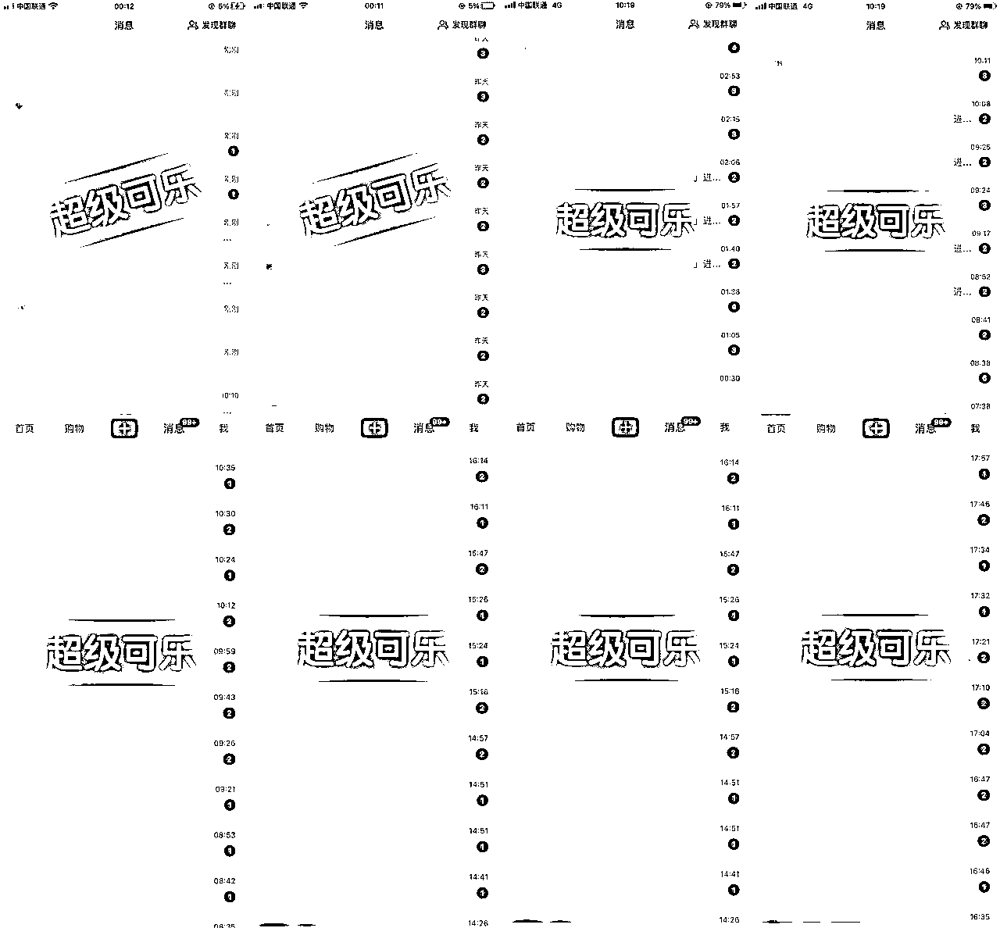
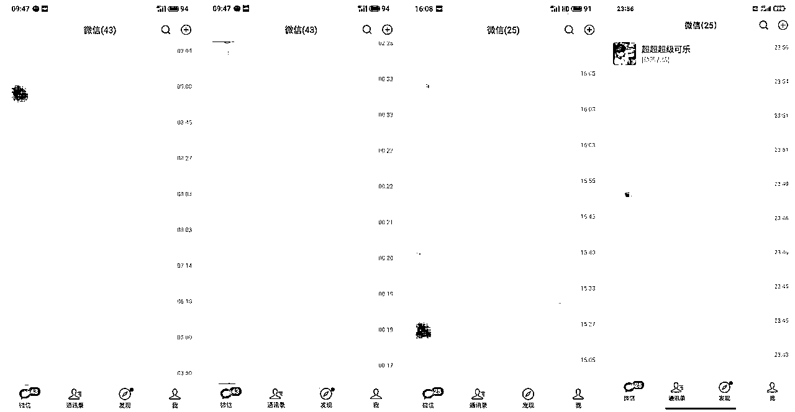
| 类型 | 动作 |
|---|---|
| 头像 | 跟写作有关的，也可以使用卡通头像或人物头像，符合人设即可，尽量不要用奇怪的头像，不要用明星，著名动漫人物这类头像，容易侵权。 |
| 昵称 | 名字具有辨识度，顺嘴好记的，不要用生僻字、太长、符号等一些难记的名字 |
| 简介 | 通用公式：我擅长什么，我的信任背书，我能提供什么价值，多参考一下同行。 |
| 背景图 | 根据人设即可，可以放一些风景图，或者跟写作有关的环境， |
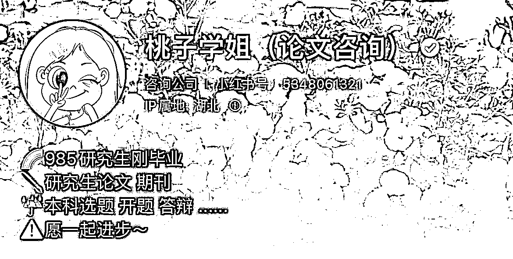
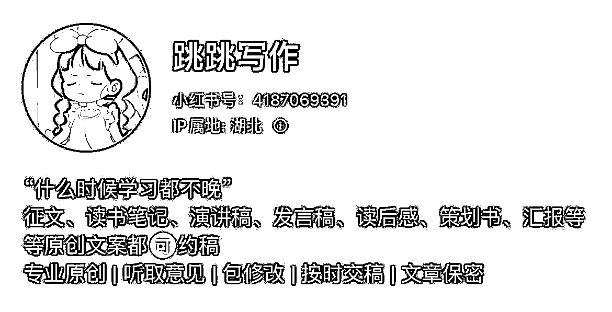
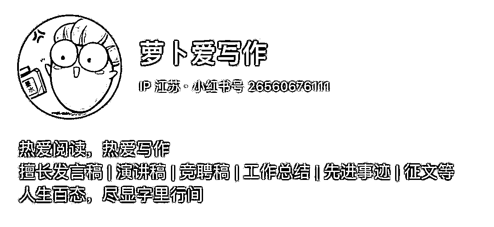
因为蓝V账号交过保护费，平台的容忍度会更高，她会给你开放一部分敏感词白名单，具体的多测测，实在不行的，后台审核员会默默帮你重置回你上一个简介内容。充了钱就是不一样，如果是普通账号，直接给你清空了，甚至违规。
一张营业执照可以注册2个小红书号，每个账号认证需要600元。
创作中心 ＞ 开通专业号 ＞ 选择推广投放 ＞ 开通账户 ＞ 填写账号信息 ＞ 填写主题资质 ＞ 支付600元审核费用 ＞ 行业资质（商务服务 -- 咨询管理 -- 咨询公司）
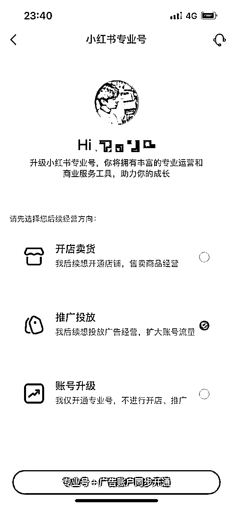
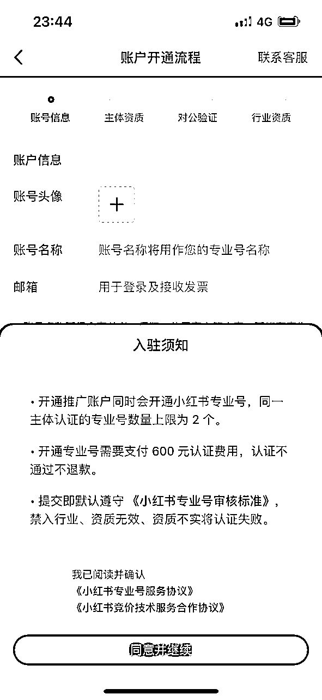
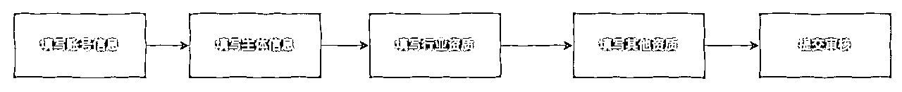
注册入口：https://ad.xiaohongshu.com/
进入【广告】页面，点击【账号管理】--【推广资质认证】--【教育培训-线上教育】
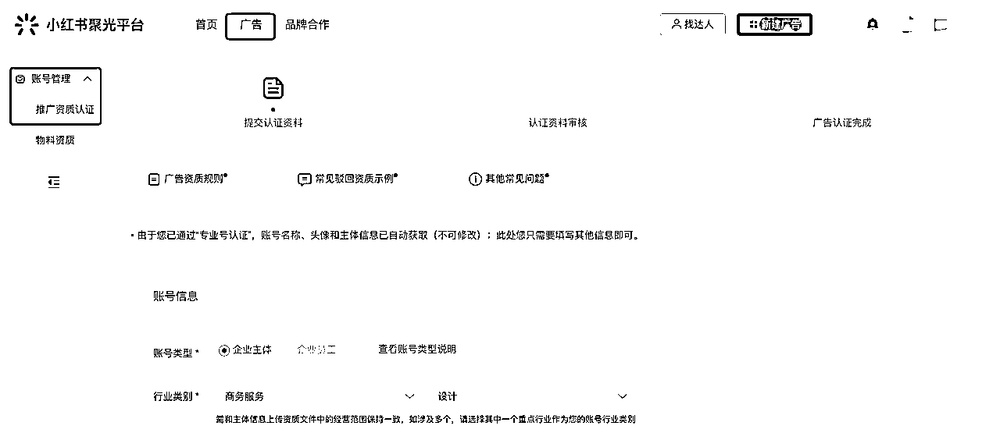
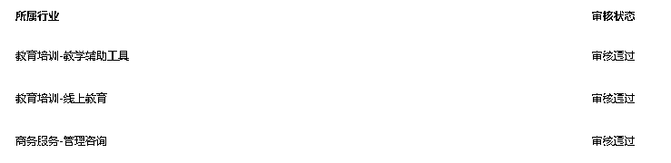
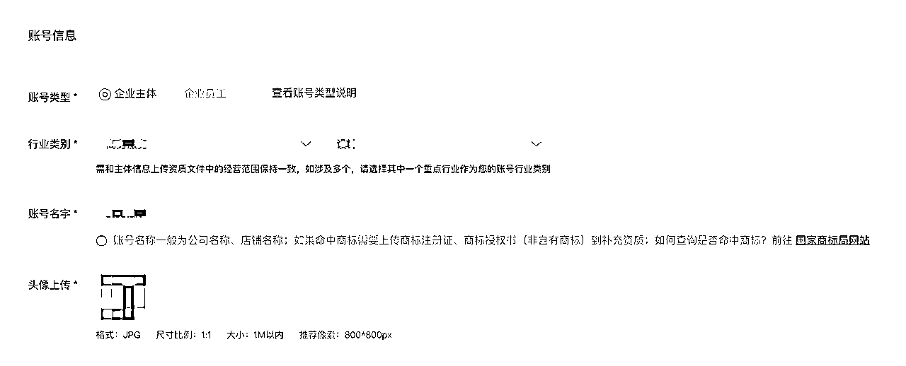
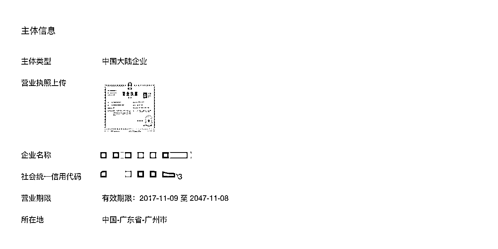
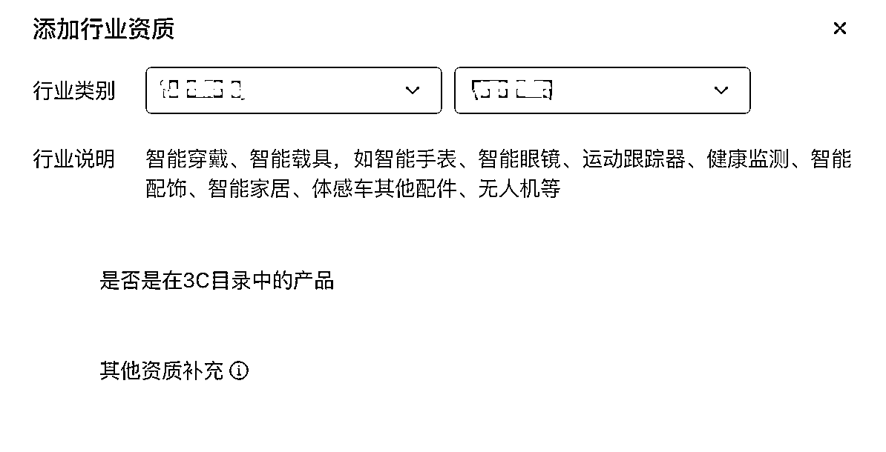
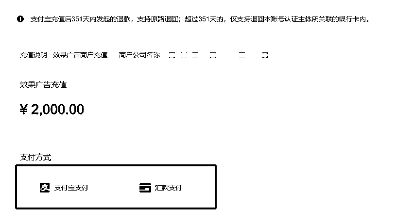
如果没有用完余额，随时可以退费。【退费流程】
做完以上步骤，就可以开始准备投放素材了。
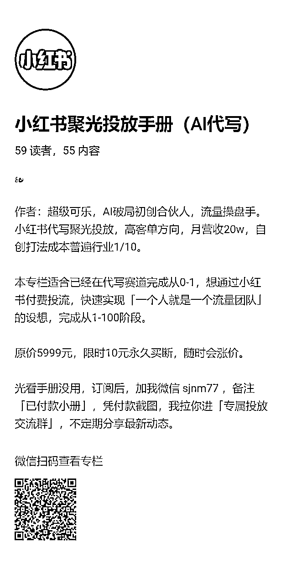